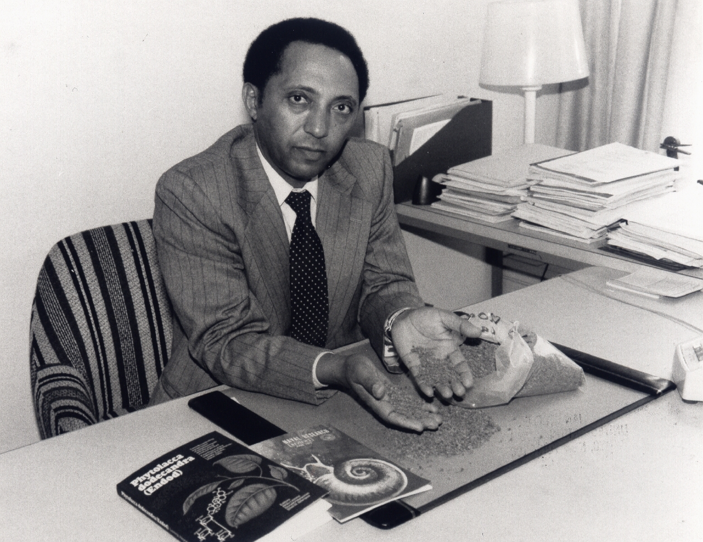

<doctype>
<html id="hi">
  <head>
    <style>
#hi { 
  font-size: 10px;
}
  #hello {
    font-family: -apple-system, BlinkMacSystemFont, 'Segoe UI', 'Roboto',
      'Helvetica Neue', Arial, sans-serif;
    font-size: 16px;
    line-height: 1.5; 
    text-align: center;
    margin: 30px 8px;
    padding: 15px;
    border-radius: 5px;
    background: #eee;
    margin: 0;
    color: #333;
} 
#header {
    font-size: 40px;
    line-height: 1.2;
    margin-bottom:0;
}
#header2 {
    font-size: 32.5px;
}
 a{
    color:blue;
}
 a:visited{
    color: purple;
}
#pic {

  max-width: 100%;

    display: block;

    height: auto;

    margin: 0 auto;

    background: white;

    padding: 10px;

  font-size: 14px;

}
 #h2 {
   margin: 50px 0;
    text-align: center;
}
  #list {
    max-width: 550px;
    margin: 0 auto 50px auto;
    text-align: left;
    line-height: 1.6;
}   
      </head>
<h1 id="header"> Dr. Aklilu lemma</h1>
<body id="hello">
<p>The man who saved a billion lives 
<br>
A story of uncovering a local tradation in to continental solution</p>
<div id="pic">

<p> Aklilu Lemma (Amharic: ???? ?? ; 18 September 1935 – 5 April 1997) was an Ethiopian pathobiologist. ... In 1989, he was awarded the "Right Livelihood 
Award"
</p>
</div>
<h3 id="h2"> Here's a time line of Dr. Aklilu lemma's life: </h3>
<ul id="list">
<li><b>1934</b> - Born September 18, 1934, Addis Ababa, Ethiopia</li>
<br>      
<li><b>1964</b>- discovered that endod () </li>
 <br> 
 <li><b>1966</b>- Established the Institute of pathobiology in Addis Ababa University, Ethiopia.For the next ten years he served as director of the institution
      </li>
      <br>
      <li><b>1989</b>-awarded the right livelihood award jointly with Dr. Legesse Wolde-yohannes for his work and discoveries on how to prevent the parasitic disease bilharzia
 </li>
<br>
<li>
<b>1997</b> - Lemma and colleagues established the Endod Foundation to serve as an umbrella for all endod-related work. Following collaboration with Lemma, the University of Toledo, USA, was granted a US patent on an endod-based molluscicide intended to control the zebra mussels which have recently invaded American lakes and caused extensive damage to water supplies. This has opened a major new hope for marketing and exporting endod as a cash crop.
     </li>
      <br>
<li>
<b>1997</b> - died , United States of America </li>
</ul>
<p id="quote"><i> "Borlaug's life and achievement are testimony to the far-reaching contribution 
<br> that one man's towering intellect, persistence and scientific vision can make to 
<br> human peace and progress."
</li>
#list2 {
  margin: 16px 0;
}
   #quote {
    max-width: 545px;
    margin: 0 auto 10px auto;
    text-align: left;
}
  #text {
text-align: left;
   margin-left: 400px;
}
  
</style>
